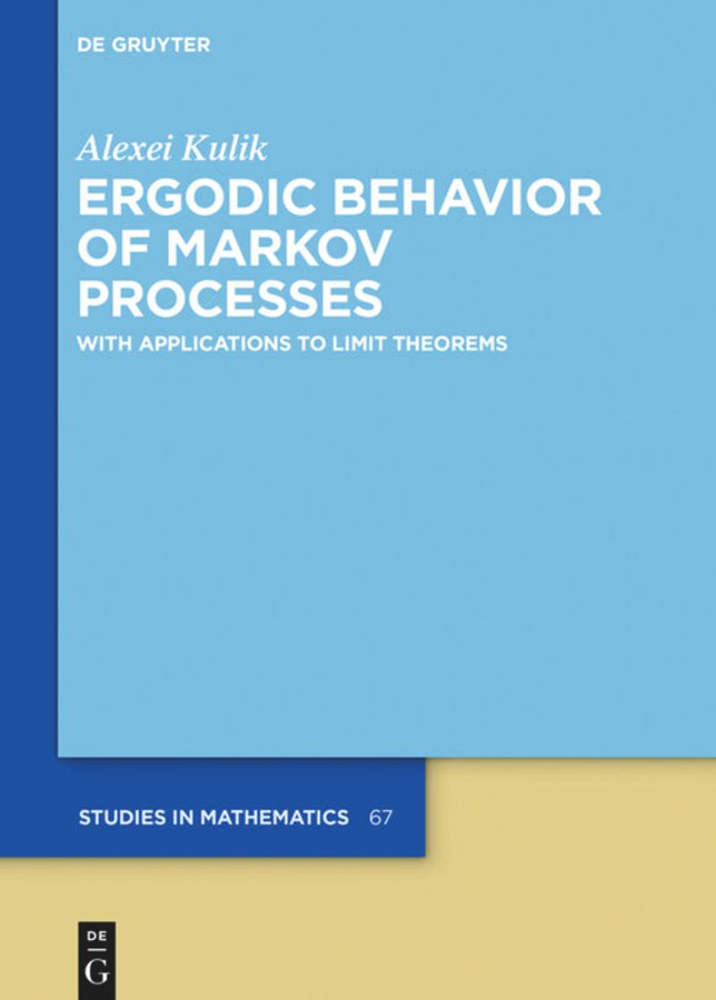

1 2023 年：ノンパラメトリクス

ここでは Gauss 過程の上限に関する集中不等式を取り上げる．
A Blog Entry on Bayesian Computation by an Applied Mathematician
$$
$$
1.1 等周不等式
体積測度 \mu が等しい可測集合のうち，球が最小の周長を持つ．
1.2 正規分布に関する等周不等式
\mathbb{R}^n だけでなく \mathbb{R}^\infty 上でも成り立つ．半径 \sqrt{m} の n+m 次元球面 S^{n+m} 上の一様分布の，最初の n 次元周辺分布は，m\to\infty の極限で正規分布に収束する (Poincaré, 1912)： (\mathrm{pr}_{1:n})_*\mathrm{U}{\sqrt{m}S^{n+m}}\Rightarrow\operatorname{N}_n(0,I_n).
1.3 中央値周りへの集中不等式
同様の命題を平均値の周りに関しても示せる．係数 2 が前につくものは (Gross, 1975) による正規分布に関する対数 Sobolev 不等式から導ける．
1.4 Gibbs 分布の集中
証明は Stein の方法による．
1.5 Metropolis-Hastings 法のスケーリング
1.6 リフティング
- スケーリングが落ちている
- 拡散項がない（定常状態からの逸脱）
アルゴリズムの高速化が伺える
1.7 MLSS 3/5〜3/15/2024

拡散過程に対する粒子フィルターが，タイムステップ \Delta\to0 の極限でジャンプ付き過程になる様子を調べた (Chopin et al., 2022) について発表．
同様の内容で学振申請し，不採択A．

2 2024 年度前期：Markov 過程の収束

ここでは連続時間 Markov 過程の劣指数エルゴード性のドリフト条件による特徴付けを取り上げる．
2.1 離散時間のエルゴード定理
2.2 連続時間の劣指数エルゴード定理
この V は ドリフト関数 ともいい，エルゴード性証明の鍵を握る．
証明法は (Kulik, 2018) が扱う skelton 連鎖 X_n:=X_{hn}\;(h>0,n=1,2,\cdots) に帰着する方法と，再起過程 (regeneration process) を用いた (Hairer, 2021) による直接的方法がある．
2.3 成立条件
2.4 多項式収束域での比較
この際のレートは Langevin アルゴリズムのもの (Jarner and Tweedie, 2003) よりも速い
3 2024 年度後期：最適輸送

ここでは (Brenier, 2003) による Euclid コストに関する最適輸送写像の表示を取り上げる．
3.1 最適輸送写像の見つけ方
この T の総輸送コストを 2-Wasserstein 距離 W_2 という．
加えて，ある真凸関数 \varphi:\mathbb{R}^d\to\mathbb{R}\cup\{\infty\} に関する勾配として表せる： T=\nabla\varphi. さらにある \varphi に関して この条件を満たす輸送 T_*\mu=\nu は最適輸送のみ．
3.2 Wasserstein 勾配流へ
実はポテンシャル U に関する Langevin 拡散は，KL 乖離度 \operatorname{KL}(\rho,e^{-V})=\int_{\mathbb{R}^d}\rho(x)\log\frac{\rho(x)}{e^{-U(x)}}\,dx に関する「最適輸送の繰り返し」と見れる．
数学的には Wasserstein 距離空間 (\mathcal{P}_2(\mathbb{R}^d),W_2) 上の勾配流として定式化することができる．
Markov 過程のエルゴード性に対する新たな視点になり得る．
3.3 Sampling as Optimization
エルゴード性の様子を \mathcal{P}(\mathbb{R}^d) 上の幾何で調べることは，実用的な含意も多い．
全変動距離は一番強い位相でカップリングとの相性が良い． しかし Wasserstein 距離を初めとした他のカップリング距離に関するアプローチも可能 (Kulik, 2018)．
この話は面白すぎる．
4 現在の取り組み：PDMC パッケージの開発

PDMPFlux.jl からの出力PDMC は 区分確定的モンテカルロ (Piecewise Deterministic Monte Carlo) の略．MCMC の後継と期待されている．
4.1 興味３分野
- 現状：１つ目に取り掛かり，２つ目を勉強中．
- １つ目の研究を始める初手として，パッケージ
PDMPFlux.jlを作成． - できれば学生のうちに３つ目のテーマの勉強までやりたい．

4.2 Zig-Zag 過程のシミュレーション
- 方向転換イベント がいつ起こるかをシミュレート
- イベント発生地点の列を出力3
- イベント間は決定論的に補間
4.3 剪定の自動化 (Andral and Kamatani, 2024)
サンプラーの強度関数 m(t):=\int^t_0\lambda(\phi_s(Z_{S_n}))\,ds の上界 M(t) を，前回のイベント位置 Z_{S_n} に応じて自動的に見つける戦略が必要．
4.4 PDMPFlux.jl パッケージ
using PDMPFlux
function U_Gauss(x::Vector) # ポテンシャルを与えるだけで良い
return sum(x.^2) / 2
end
dim = 10 # 次元は与える必要あり
N_sk, N, xinit, vinit = 100_000, 100_000, zeros(dim), ones(dim) # ハイパーパラメータ
sampler = ZigZagAD(dim, U_Gauss) # サンプラーのインスタンス化, AD は自動微分のこと
output = sample_skeleton(sampler, N_sk, xinit, vinit) # PDMP のシミュレーション
samples = sample_from_skeleton(sampler, N, output) # サンプルの抽出
diagnostic(output) # サンプラーの診断
jointplot(samples) # サンプルの可視化

5 これから
パッケージ開発は今後の研究のため．応用もしたいが，更なるサンプラー開発や基礎的な研究の足がかりにしたい．
5.1 現状の PDMC アルゴリズム
基本的には拡張された空間上で動き，新たな変数 \theta を 速度 や momentum という： (x,\theta)\in\mathbb{R}^d\times\Theta,\qquad\Theta\subset\mathbb{R}^d.
ポテンシャル（負の対数尤度） U の構造を on the fly で学ぶメカニズムが必要．
5.2 PDMC アルゴリズムへの基礎的貢献
すると速くなるはず
対称な MCMC で最速は HMC．本質的に非可逆であり，遠くまで行くメカニズムを持つが，最後に採択-棄却のステップが必要で，backtracking を導入しがち．
棄却をしない枠組みはどこまで出来るか？
PDMC も状態空間を拡張する点は HMC に似ているが，Poisson 過程をシミュレーションするために採択-棄却のステップを使うことで，人工的な対称性の導入を回避している．
いわばスプーンでかき混ぜるギミックの再現．しかしこの枠組みでどこまで人工的な対称性を排除したダイナミクスを作れるかは不明．
以上の直観を，数理的な知識に変換したい．
5.3 離散空間上の MCMC
PDMC のパッケージもあるので，応用していきたい．
クラスタリングの問題では \Gamma=[K]^n となる．「すべてのラベルの割り当て方の全体」\Gamma 上で MCMC をやるアプローチ？
5.4 ノンパラメトリクスへ
より現実的な尤度へ
複雑な尤度に対するサンプラーを考えるのが一番面白い． 階層化も面白いが，Gauss 過程やカーネル法などのノンパラメトリクスは特に面白いモデリングが可能． 計算の部分で貢献できることがあるのでは？
ベイズ逆問題
OT を逆に解く問題も (Stuart and Wolfram, 2020), (Chiu et al., 2022) で出てきた． \Phi:T\mapsto\{(x_i,T(x_i))\}_{i=1}^n 逆像を推定する，というのはフローマッチングと同じ定式化になる (Lipman et al., 2023), (Tong et al., 2024)． その学習は \mathcal{P}(\mathbb{R}^d)^{[0,1]} 上の Dirichlet 積分の最適化と等価になる (Isobe et al., 2024)． サンプラーにより \mathcal{P}(\mathbb{R}^d) 上の最適化をする方法もある？Feynman-Kac flow と関係するなら SMC でも可能？
確率過程＋関数解析が自分の強みと好みを最も活かせる？
参考
Footnotes
この設定では \|X\|_\infty は連続分布をもち，M は一意に定まる．↩︎
DU(x)=O(\lvert x\rvert^{\kappa}) よりも遅い減衰で，内側を向いていれば良い．↩︎
このため物理学では Event-chain Monte Carlo (Bernard et al., 2009) と呼ばれる．↩︎